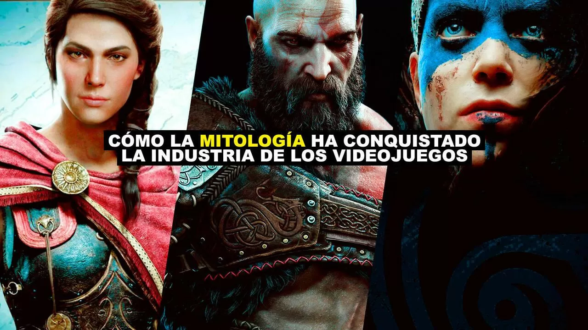
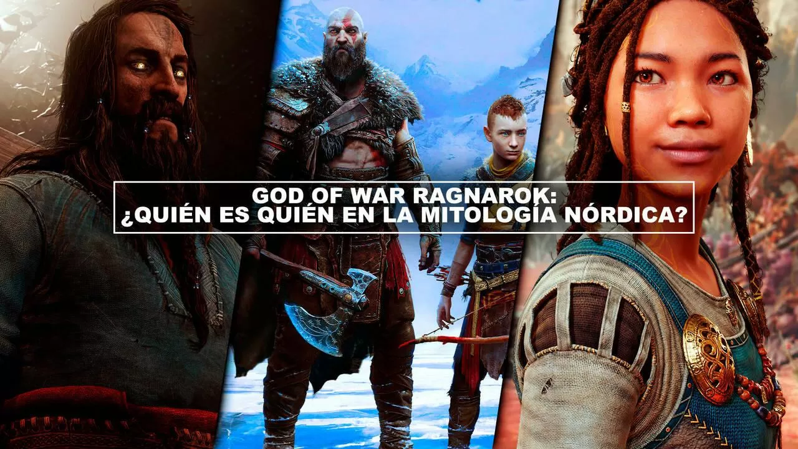
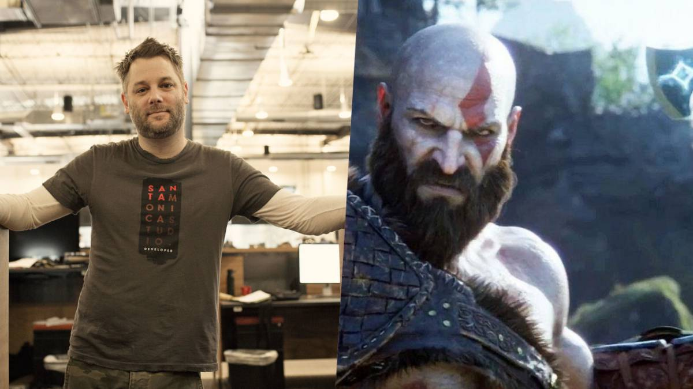
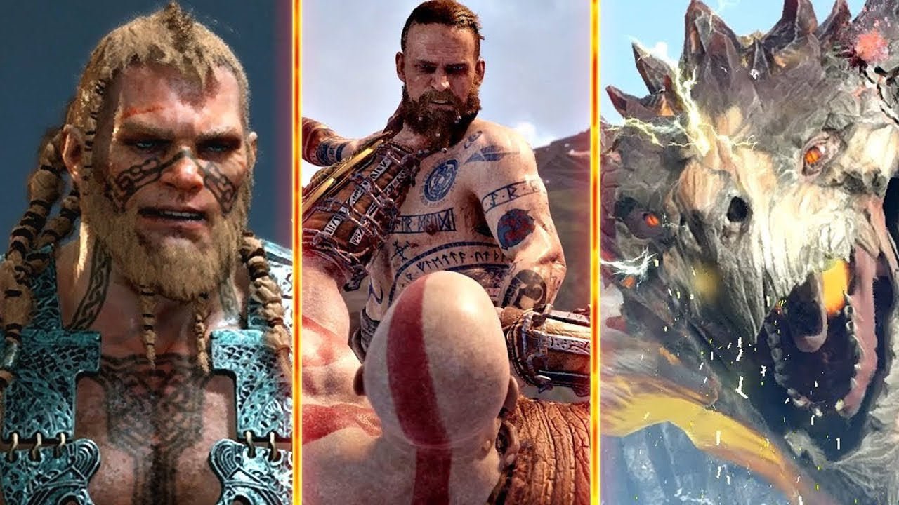

Reportajes
¡Últimos reportajes hasta el día de la fecha!
Aquí encontrarás todos los reportajes y artículos de interés que hemos realizado, además aquí abordaremos especiales sobre un tema, entrevistas, concursos y dossieres, sobre el mundo de GOW

Cómo la mitología ha conquistado la industria de los videojuegos
El éxito de God of War Ragnarök demuestra que la mitología sigue estando de moda. Entra aquí, redescubre los videojuegos, como cualquier otra obra hecha por el hombre y bebe de toda la cultura que nos ha acompañado desde antes de aprender a escribir.

God of War Ragnarok: ¿Quién es quién en la mitología nórdica?
Desglosamos a los personajes de la esperada secuela del juego de Sony Santa Monica para perfilar por dónde puede ir la historia. Desglosamos a los personajes de la esperada secuela del juego de Sony Santa Monica para perfilar por dónde puede ir la historia.

El director de God of War pide más respeto hacia los desarrolladores de videojuegos
Cory Barlog acudió a su cuenta personal de Twitter para defender a una desarrolladora de God of War: Ragnarok que sufrió de acoso en la red social por parte de cierto sector de la comunidad.

Santa Monica Studio estalla por las filtraciones de God of War: Ragnarok
El creativo ha confirmado que una tienda ya está vendiendo el juego. Asegura que es muy decepcionante y 'estúpido' que los fans tengan que esquivar spoilers.